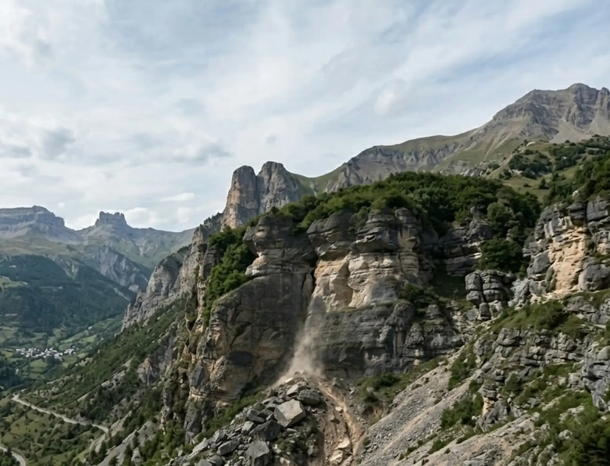

01 / 矿山安全解决方案
矿山稳定性安全监测方案
面向露天矿、地下矿、尾矿库和排土场，提供 GNSS 位移、边坡稳定性与自动化预警能力，保障生产安全与合规运行。
- 地表位移与边坡稳定性实时分析。
- 面向滑坡风险的自动化分级预警。
- 复杂极端环境下的亚毫米级监测能力。
02 / 水利工程
水利与水电工程实时监测
面向水库大坝、堤防、库区边坡与灌区设施，提供高频遥测、位移识别与自动化预警能力。
水利数字孪生
支撑流域、水库与灌区场景的数字化监管与可视化决策。
GNSS 动态解算
高频位置更新，持续捕捉水工结构与边坡细微形变。
03 / 地质灾害
查看地灾方案 →
地质灾害监测预警系统
面向滑坡、泥石流、崩塌等复杂灾害场景，构建从现场感知到平台预警的闭环监测体系。
01
支持多级预警与远程通信上报。
02
融合多源数据识别滑坡、崩塌与地质风险。
